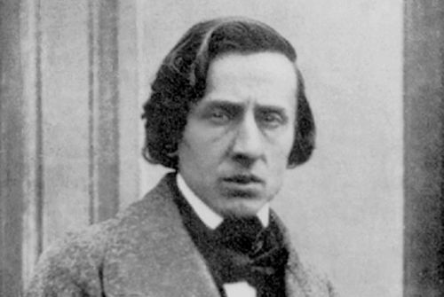

1. Mikołaj Chopin był spolonizowanym Francuzem. Był nauczycielem języka francuskiego i guwernerem. To właśnie w "pracy" poznał swoją przyszłą żonę i matkę Fryderyka - Teklę.
2. Fryderyk jako siedmiolatek był już autorem kilku drobnych kompozycji. Były to polonezy, czyli muzyczna forma taneczna oparta na tańcu polonez. W atmosferze tej muzyki młody Chopin dorastał.
3. Co 5 lat w Warszawie odbywa się Międzynarodowy Konkurs Pianistyczny im. Fryderyka Chopina.
4. Obywatele Japoni szczególnie pasjonują się muzyką Chopina.
5. W 1817 roku ukazał się pierwszy wydany drukiem utwór Fryderyka Chopina. Był to polonez w tonacji g-moll.
6. W 1836 roku Fryderyk Chopin zaręczył się z Marią Wodzińską, ale do ślubu nigdy nie doszło. Rodzina Marii nie zgodziła się na ślub, twierdząc, że Fryderyk jest zbyt chorowitym kandydatem na męża i zaręczyny zostały zerwane.
